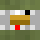

const width = 2;
const depth = 3;
const height = 4;
let blocks = knoxel.makeGrid(width, depth, height);
for (let w=0; w<width; w++){
for (let d=0; d<depth; d++){
for (let h=0; h<height; h++){
blocks[w][d][h] = knoxel.dirt;
}
}
}
knoxel.drawBlocks(blocks);
width = 2
depth = 3
height = 4
#blocks = [[[null for k in xrange(height)] for j in xrange(depth)] for i in xrange(width)]
blocks = makeGrid(width, depth, height)
for i in xrange(width):
for j in xrange(depth):
for k in xrange(height):
blocks[i][j][k] = bt.cobblestone
drawBlocks(blocks)
Knoxel aspires to bring the joy of Minecraft to CS-0 and CS-1 courses.
Many students have made contributions to Knoxcraft over the years! They are:
 John Damits, Knox College '17, funded by the Mellon Foundation and the Richter Memorial Trust